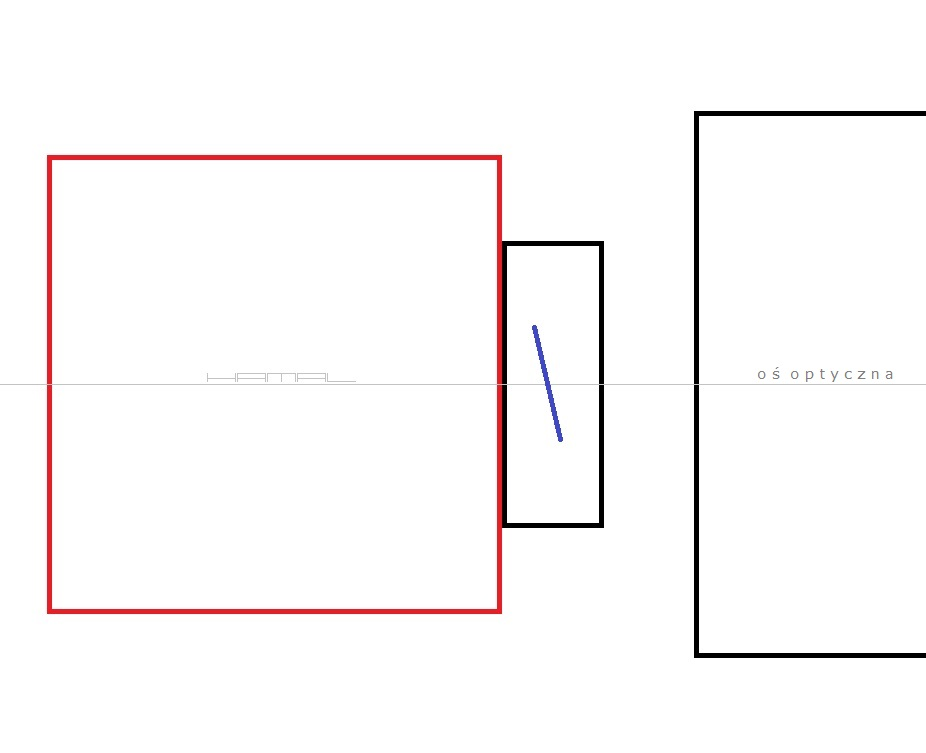
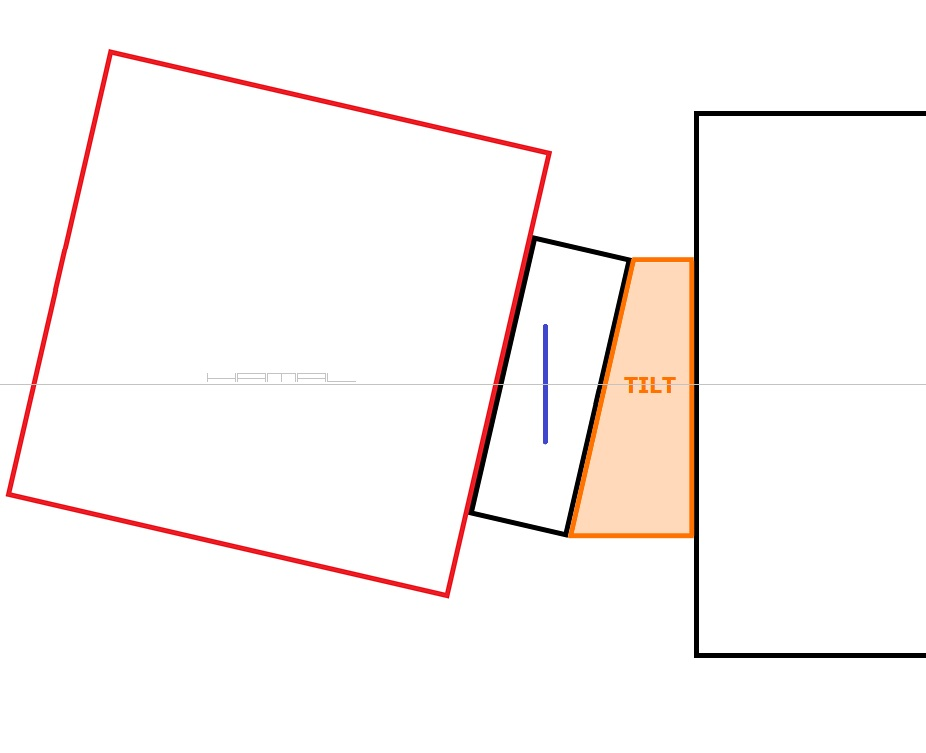

30-10-2020
|
OPIS W astrofotografii bardzo ważnym zagadnieniem jest, aby oś optyczna lustra głównego padała idealnie prostopadle na matrycę astrokamerki, niestety, kamerki astrofotograficzne bardzo często posiadają fabrycznie krzywo zamocowaną matrycę. Można to poprawić (o czym prawi TEN tutorial) ale wiele osób woli nie ingerować w sprzęt i jest zmuszona rzeczoną usterkę obejść jakoś inaczej. W tym celu przed kamerką montuje Tilt Adapter, za pomocą którego przekrzywia się kamerkę, aby mieć prosto matrycę. Patrz poniżej obrazki obrazujące zagadnienie dla lepszego zobrazowania zjawiska. Poniżej sytuacja mocno niepożądana. Kamerka w wyciągu okularowym zamontowana jest osiowo, ale niestety, krzywo osadzona matryca (niebieska kreska) nie jest prostopadła do osi optycznej teleskopu.  Poniżej sytuacja kompromisowa. Kamerka w wyciągu okularowym (za pomocą Tilt Adapter) została zamontowana nieosiowo, aby nadal krzywo osadzona matryca (niebieska kreska), mogła być prostopadła do osi optycznej teleskopu.  Poniżej sytuacja wielce pożądana. Kamerka w wyciągu okularowym zamontowana jest osiowo a matryca (niebieska kreska) osadzona prostopadle do osi optycznej, ale niestety, wymagało to wykonania TEGO zabiegu. 
|